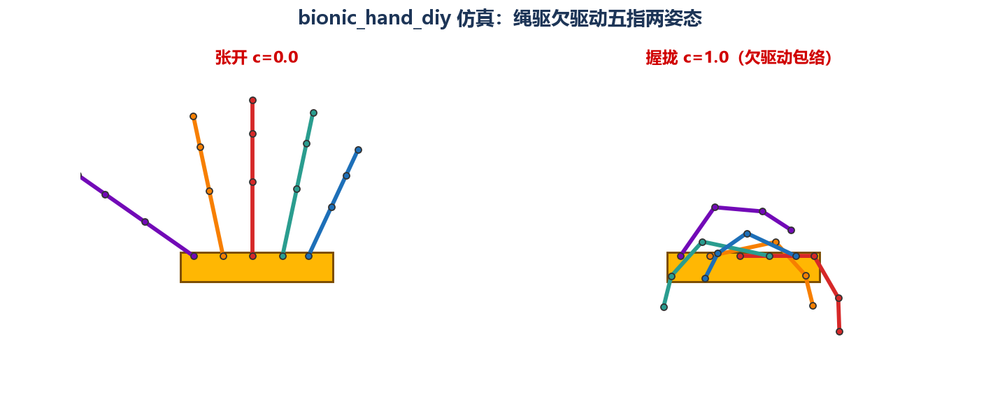
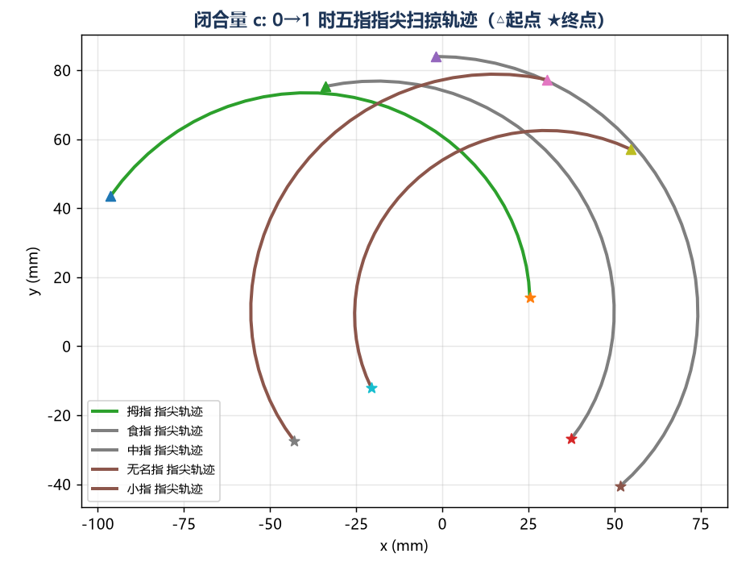

小白指南 · 看懂「舵机 + 绳驱 + 欠驱动」百元机械手的结构与控制全链路
一句话：一块手掌底板 + 5 根 3D 打印（或雪糕棒）指骨 + 5 个舵机 + 一套鱼线腱绳 + 一块 Arduino 控制板。每一根手指由 2~3 节指节用铰接孔串联，舵机装在手掌里，拉动穿过指节的线，手指就"卷"起来。
| 人手 | 百元仿生手 | |
|---|---|---|
| 自由度 | 21+ 个，每指可独立弯/展/对掌 | 5~6 个（每指 1 个舵机），关节靠被动联动 |
| 驱动 | 肌肉 + 肌腱 | 舵机 + 鱼线（正好是在模仿肌腱！） |
| 触觉 | 2 万+ 触觉感受器 | 无（高级版加压力传感器） |
| 能干啥 | 一切 | 包络抓取：握笔、握鸡蛋、抓瓶子——抓，不捏 |
舵机（Servo）= 便宜电机 + 减速齿轮 + 角度电位器 + 小驱动板，四合一封装。它不像普通电机"通电就转"，而是你告诉它一个目标角度，它内部的闭环自己转过去并保持住（所以叫"舵"）。一个 SG90 只要几块钱，扭矩约 1.8 kg·cm——拉一根鱼线卷起一根塑料手指，绰绰有余。
它听懂的"语言"是 PWM 脉宽调制：每 20ms 一个脉冲，脉冲的高电平宽度代表角度：
人手 21 个自由度需要 21 个"执行器"，那要 21 个舵机？成本爆炸、控制爆炸、手臂粗得像萝卜。解法叫 欠驱动（Underactuation）：执行器数量 < 自由度数量，缺口用"机械智能"补。
"机械智能"指两样不要钱的东西：弹簧（让未主动驱动的关节自动复位）和机械限位/耦合（让关节按固定次序联动）。耶鲁 OpenHand、InMoov、B站百元机械手，全是这条路。
绳驱/腱驱（Tendon drive）：舵机装在手掌里，输出轴装一个小卷线轮，一根鱼线（腱绳）依次穿过每节指骨侧面的导索孔，末端固定在指尖。舵机卷线 → 绳被拉紧 → 指节被"拽弯"，像牵线木偶。张开靠每节指骨间的复位弹簧（或弹性材料本身）。
妙处在于自适应包络：手指碰到物体的那节先停住，绳还在走，剩下的行程继续弯下一节——手指自动"裹"住物体，不管抓的是笔还是瓶子，不需要知道物体形状。这正是耶鲁 OpenHand 论文里强调的 passive adaptivity。
看了已克隆的耶鲁仓库 repo\Python-3.6\openhand.py，核心抽象极其简洁：上层永远只发"比例量" amnt ∈ [0, 1]（0=全开，1=全闭），类内部再换算成舵机/电机能吃的数值：
没硬件也能跑通的部分：PWM→角度换算、闭合量→关节角耦合、关节角→指尖坐标、抓取序列状态机。这些正是本指南主实验干的事（见实验章节），连力控思想都能看：耶鲁代码里 max_torque=0.4 是把堵转扭矩限制在 40% 保护手指——你买舵机后同样要设限。
正运动学（Forward Kinematics）：已知各关节角，求末端位置。平面三连杆根本不用背 DH 参数表，初中三角函数就够——每节指骨是一个向量，关节角决定向量方向，首尾相加：
三处硬核仿生：①传动仿生——电机藏"肌肉"位置、鱼线当"肌腱"，跟人手前臂握拳的腱传动同构；②比例仿生——指节长度比 ≈ 人手近节:中节:远节（约 2:1.3:1），抓握轨迹自然；③行为仿生——欠驱动自适应包络正是人手"随便一抓就稳"的被动柔顺。
工业夹爪反着来：两指平行、刚体传动、位置/力全闭环，抓一种工件调一次参数，快而硬。仿生手反过来：慢、软、不准，但抓什么都像那么回事，还不捏碎鸡蛋。
| 项目 | 成本 | 难度 | 材料获取 | 适合谁 |
|---|---|---|---|---|
| B站"小楚君"百元机械手（BV19Dgy6GEeJ） | <￥100 | ★ | 网盘全套开源文件（提取码 xesd）+ 雪糕棒/3D打印 | 第一次动手的你 |
| MakerWorld 五指灵巧手（ESP32-C3 + PCA9685） | ￥100~200 | ★★ | 模型全开源，3D打印 + 淘宝舵机 | 想要"能编程的进阶版" |
| Yale OpenHand（grablab，已克隆 repo\） | 数千元 | ★★★★ | CAD + 固件 + 论文全公开，用 Dynamixel 数字舵机 | 科研/读源码学架构 |
| InMoov | 数千元 | ★★★★ | 全身机器人开源，手只是模块之一 | 想最终造整机器人 |
| 物料 | 规格 | 数量 | 参考价 |
|---|---|---|---|
| SG90 舵机 | 9g 塑料齿 | 5 | ￥10~15（约￥2~3/个，散装更便宜） |
| Arduino Nano/ESP32-C3 | 兼容板 | 1 | ￥10~20 |
| PCA9685 舵机驱动板 | 16 路 I2C（可选） | 1 | ￥5~8 |
| 鱼线/编织线 | 0.3~0.5mm | 少量 | ￥3 |
| 弹簧/弹性绳 | 回位用 | 少量 | ￥3 |
| 3D打印件/雪糕棒+铆钉 | 指节+掌板 | 1 套 | ￥10~30（自打）或 ≈￥0（雪糕棒） |
| 杜邦线、面包板、5V/2A 电源 | — | — | ￥15~20（多半家里有） |
| 合计 | — | ≈ ￥56~96 ✅ 在 100 元内 | |
| 症状 | 根因 | 药方 |
|---|---|---|
| 舵机嗡嗡抖动 | 供电不足 / 目标角卡死在机械极限 | 独立 5V≥2A 供电共地；代码里给行程留 5° 死区（耶鲁代码同样用 min/max 限位） |
| 握不住重物 | SG90 扭矩 1.8kg·cm 天花板 | 换 MG90S 金属齿；缩短指节；降速（绳张力更足）；耶鲁思路：扭矩上限设 40% 防堵转烧机 |
| 手指卷不紧/回弹慢 | 腱绳张力松弛 | 加张力调节螺钉；绳打结点涂胶；行程补偿（代码里 c 上限微调） |
| 五指快慢不一 | 各绳初始长度/摩擦不同 | 逐一标定"闭合量 c → 视觉对齐"，像耶鲁 README 里 offset 标定那样迭代 |
| USB 一插就重启 | 5 舵机峰值电流 2A+ 拖垮 USB 500mA | 外接电源，必须与逻辑板共地 |
①体感手套：手套上贴弯曲传感器（或用 MediaPipe 摄像头识别手指关节角，见 GitHub 上 AI-Robotic-Hand 等项目），你的手动、机械手跟着动——正好用到本指南的正运动学做映射。②肌电控制：MyoWare 肌电传感器贴小臂，听"肌肉电话"（￥100+，进阶）。③力控抓握：指尖贴 FSR 压力传感器，接触即停、按力闭合——把欠驱动的"被动柔顺"升级成"主动柔顺"。 ④换数字舵机：像耶鲁 OpenHand 那样用可回读角度的 Dynamixel，就能做闭环抓握研究。
openhand.py 的"比例量 amnt"抽象和限位/限扭思想（实验 Step2/Step5 对照）操作：git clone --depth 1 https://github.com/grablab/Yale-OpenHand-Workshop-2018 repo（637MB 的 CAD 仓库 openhand-hardware 跳过；另注：grablab/openhand-firmware 仓库名不存在，实际固件在 Workshop 与 openhand_node 仓库中——这是本次踩的坑）
验证：git -C repo log --oneline -1 → ac11e5c Update README.md ✅（HEAD 实测）
目的：搞懂舵机怎么把 0.5~2.5ms 脉宽翻译成 0~180°。实现：pulse_to_angle() 线性映射 + 边界/中位/往返一致性断言。
命令：cd F:\reminder\bionic_hand_diy\exercise && python bionic_hand_sim.py
脉宽 1500 us → 90.0 deg（周期 20ms 中占比 7.5%），断言 [PASS] 中位 1500us→90°，边界 500/2500us→0°/180°，往返映射一致目的：复现"一个电机拽一条绳，三关节按 5:3:2 分行程"的欠驱动核心。实现：close_amount_to_angles(c) = min(c·2·share, 1)·θmax，并打印绳行程 Σr·θ。
[PASS] c=0 全伸直、c=1 近端满角/中远端按耦合比到位，绳行程单调递增。对照耶鲁 openhand.py：其 amnt∈[0,1] 比例量抽象与我们完全一致。目的：验证"向量接力"公式。实现：phi = 90° − cumsum(θ)，指尖 = Σ Lₖ(cosφₖ, sinφₖ)。
[PASS]。（调试实录：初版方向约定写反，指尖跑到 (0,−84)，改为初始 +90°、弯曲向掌心后通过）目的：让欠驱动"看得见"。实现：matplotlib 绘制 c=0 张开扇形与 c=1 握拢包络笼，及五指指尖轨迹。
exercise\fig_hand_poses.png（张开=五指扇形，握拢=各指卷向掌心的包络）与 exercise\fig_finger_trajectory.png（五条类圆弧扫掠线，△起点★终点），已逐张目检确认。

目的：模拟真实控制循环里的动作序列（对标耶鲁 move_hand 序列思想）。实现：序列表 + 合法性断言（除"保持"外角度必须变化；释放必须回到全开位形）。
[PASS] 序列状态机合法：闭合/释放为互逆过程，保持阶段角度冻结。总结论：没有买任何硬件，"PWM→角度→耦合→运动学"整条控制链全部验证通过。